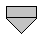
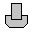
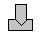
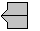
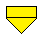
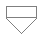
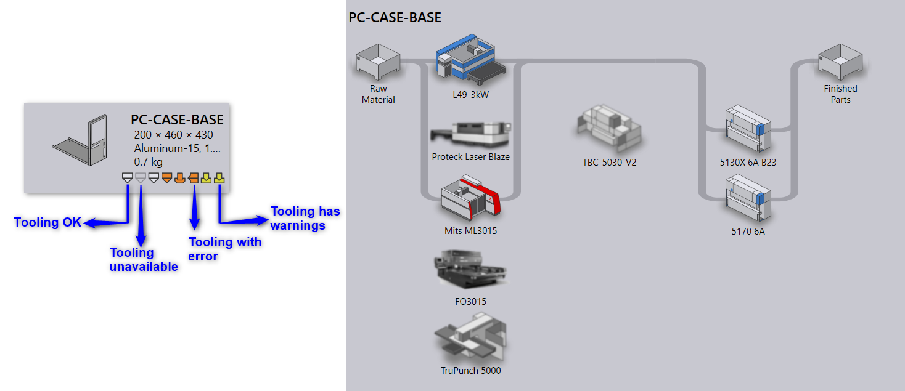

Tooling is OK
Tooling is OKPart tiles display tooling status of the part for all available Praxis machines. The sections below display various icons and icon-colors used to indicate the machine technology and tooling status.
 Laser Machine
 Punch Machine
 Panel bending Machine
 Bending Machine
Tooling is OK
 NC is generated but tooling has warnings
Tooling has errors
 Part tooling is not available for this machine
